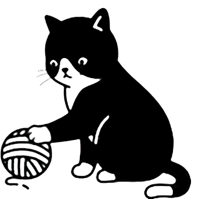

Create screen recordings with editing, annotations with full control over your videos.

The Problem
The Solution
Connect Google Drive. Your recordings stay on your storage, private, and unlimited. No servers watching. No sensitive data shared. No paywalls blocking. Just yours.
Features
Capture screen, camera, and audio together
Trim, split, merge, and add text overlays
Draw on screen while recording
Send secure links with control options
Comments, analytics, and transcription
Videos saved directly to your Google Drive
Join the waitlist and be the first to try it